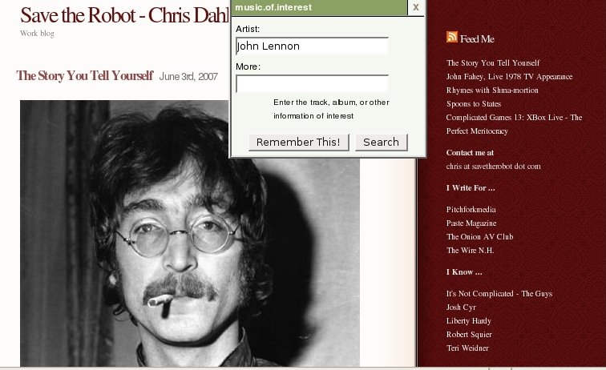
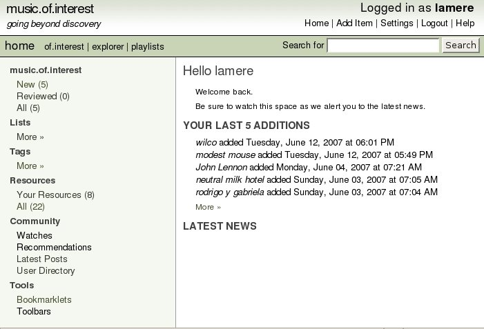

This happens to me all the time. I read a blog entry about a
new band. I want to check them out later - to listen to,
perhaps to see if they are listed on eMusic, or perhaps to see if they
are touring - but with my 48-year-old neurons - when I finally do have a
few minutes, I can't even remember that there was a new band that I
wanted to check out.
That's where music.of.interest
comes in. music.of.interest gives you a tiny bookmarklet to put
in your bookmark toolbar. When you click on the bookmarklet, it
brings up a tiny window where you can type in the name of the band that
you want to remember for later.

This
just adds the artist to your list of music.of.interest artists.
The next time you are ready for some music exploration, you can just pop
over to the music.of.interest site. There you'll see your list of
artists, along with lots of tools for exploring these artists.

With
m.o.i you can easily look up info about the artist at the usual places
like Wikipedia, AllMusic, Last.fm, Flickr, eMusic, the hype machine and
Pandora. You can tag bands, add them to your eMusic 'To Buy' list.
music.of.interest
- is quite fresh - I could still smell the paint drying. The
community of users has grown to about 12 right now, and there are a few
unimplemented features. The main missing feature is that you can't
listen to any music on the site. You can read bios, find videos
and photos, but if you are exploring for music, you really need to be
able to listen to the band too. Craig Huizenga, author of m.o.i
says in his blog: Hopefully soon you will start to see artist and album information on
the site - I’m going to source the base data from the excellent Music Brainz database, and then try and tie that over to the Rhapsody. After that, it’s tracks and playlists ...
m.o.i
- is a well designed, clean site - written in Rails - it doesn't
overwhelm with ajax, intuitive to use ... but is clearly still in
development - there are planned features that are just not implemented
yet.
I've added the m.o.i bookmarklet to the very precious
real-estate that is my bookmark toolbar (right next to the javadoc for
the jdk). I'm looking forward to seeing all of the things
Craig is planning to do with the site.


{kind=link}
{kind=link}